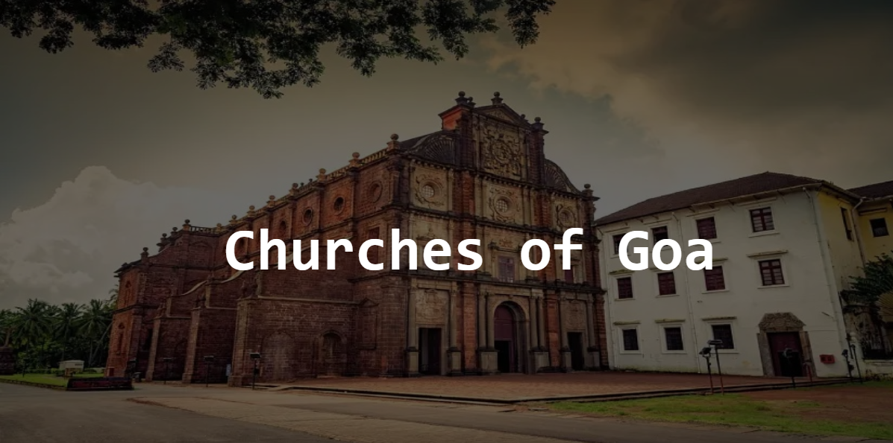
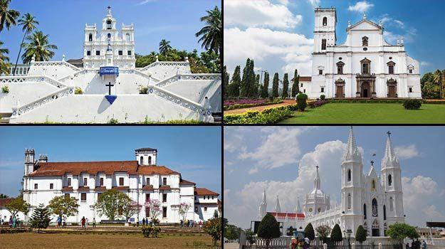
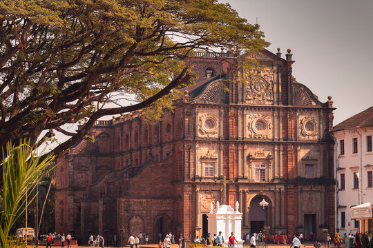
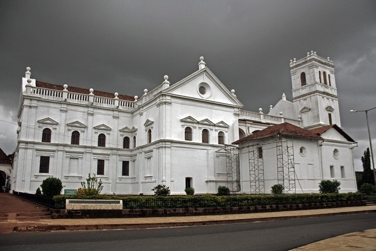
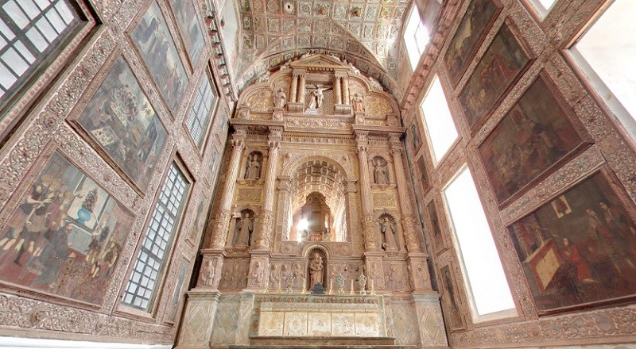
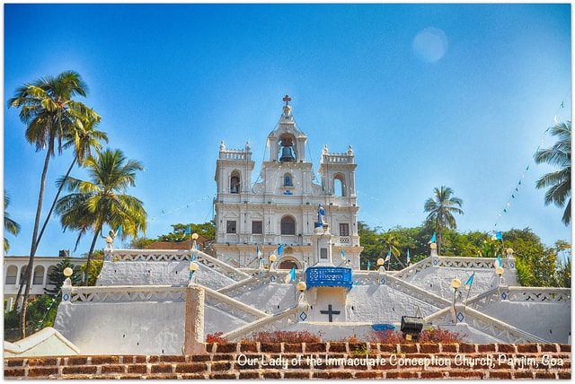
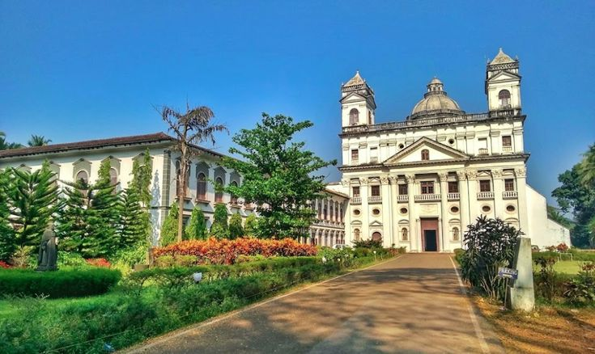

Adventour

Churches of Goa
The churches of Goa are not only beautiful structures but also bear witness to the state's rich history and
cultural heritage.
These magnificent churches feature a blend of Indian, Portuguese, and European
architectural
styles, reflecting the various
influences that have shaped the state over the centuries. Many of these
churches
were built during the 16th and 17th centuries
when Goa was a Portuguese colony, and they serve as a
testament to
the enduring legacy of the Portuguese in India. The churches
of Goa are not just places of worship, but they
are
also significant cultural landmarks that attract visitors from all over the
world.

Basilica of Bom Jesus
The Basilica of Bom Jesus is a famous UNESCO World Heritage site located in Old Goa, India. Built in the
16th century, this beautiful church is famous for containing the mortal remains of St. Francis Xavier, a
revered Jesuit missionary who played a significant role in spreading Christianity in Asia. The church
features stunning Baroque architecture and is known for its striking marble flooring and intricately carved
altars. The Basilica of Bom Jesus is one of the most visited tourist attractions in Goa and attracts
visitors from all over the world who come to marvel at its beauty and rich history.

Se Cathedral
The Se Cathedral is a historic church located in Old Goa, India, and is one of the largest churches in Asia.
Built in the 16th century, the church is dedicated to St. Catherine and is known for its stunning Portuguese
Gothic architecture. The church features a towering bell tower, a magnificent altar, and ornate decorations
throughout the interior. The Se Cathedral is also famous for its Golden Bell, one of the largest bells in
the world, which is said to have a deep and resonant sound. The Se Cathedral is a popular tourist
destination in Goa and attracts visitors from all over the world who come to admire its beauty and rich
history.

Church of St. Francis of Assisi
The Church of St. Francis of Assisi is a historic church located in Old Goa, India. Built in the 17th
century, the church is famous for its Baroque architecture and stunning frescoes. The church features a
beautiful altarpiece that depicts the life of St. Francis of Assisi, the patron saint of the church. The
interior of the church is adorned with intricate carvings, paintings, and statues, making it a masterpiece
of Indian Baroque architecture. The Church of St. Francis of Assisi is a popular tourist destination in Goa
and is visited by thousands of visitors every year who come to marvel at its beauty and rich history.

Church of Our Lady of the Immaculate Conception
The Church of Our Lady of the Immaculate Conception is a historic church located in Panaji, the capital city
of Goa, India. Built in the 16th century, the church is known for its striking white façade and the
impressive bell tower that stands at 150 feet tall. The church's interior features intricate wood carvings,
ornate altars, and beautiful stained glass windows. The Church of Our Lady of the Immaculate Conception is
one of the most famous landmarks in Goa and is a popular destination for tourists and locals alike. It is
also a significant religious site and hosts numerous events and festivals throughout the year.

Church of St. Cajetan
The Church of St. Cajetan is a historic church located in Old Goa, India. Built in the 17th century, the
church is known for its beautiful Corinthian architecture and stunning frescoes. The church's interior is
adorned with intricate carvings and ornate altars. The Church of St. Cajetan is also home to a statue of the
Infant Jesus that is said to have miraculous powers. The church is a popular tourist destination in Goa and
is visited by thousands of visitors every year who come to marvel at its beauty and rich history.

Also Read